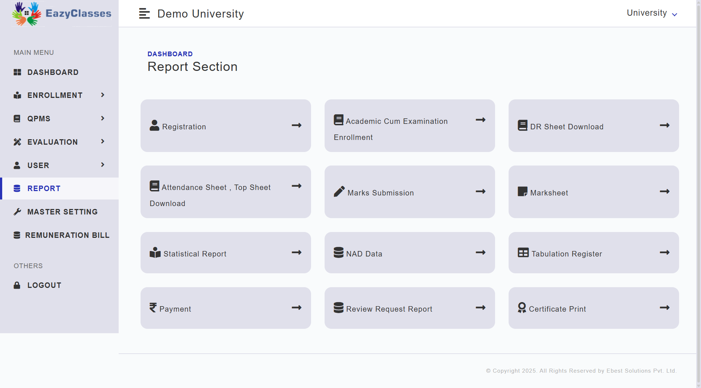

Login Page

Users can log in to the system using valid credentials to access authorized features.
Users can log in to the system using valid credentials to access authorized features.

Users can generate various types of reports from this section according to their specific requirements.

Through this section, authorized users and administrators can generate and access various reports using the available options.